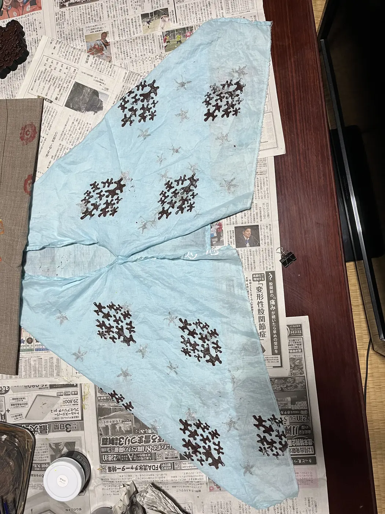
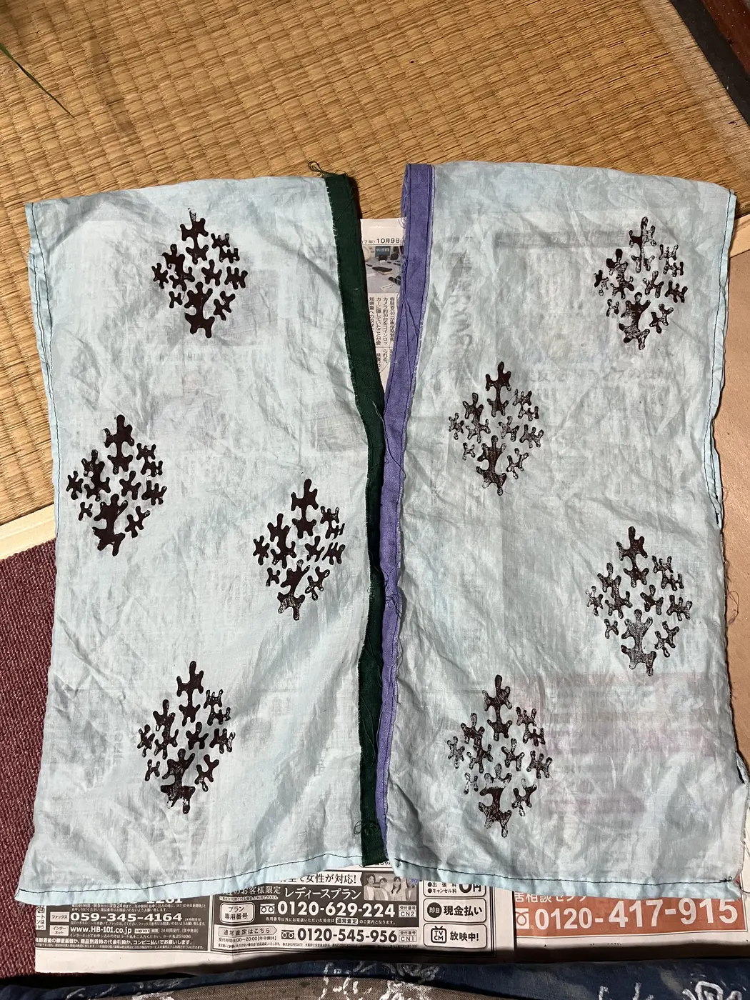
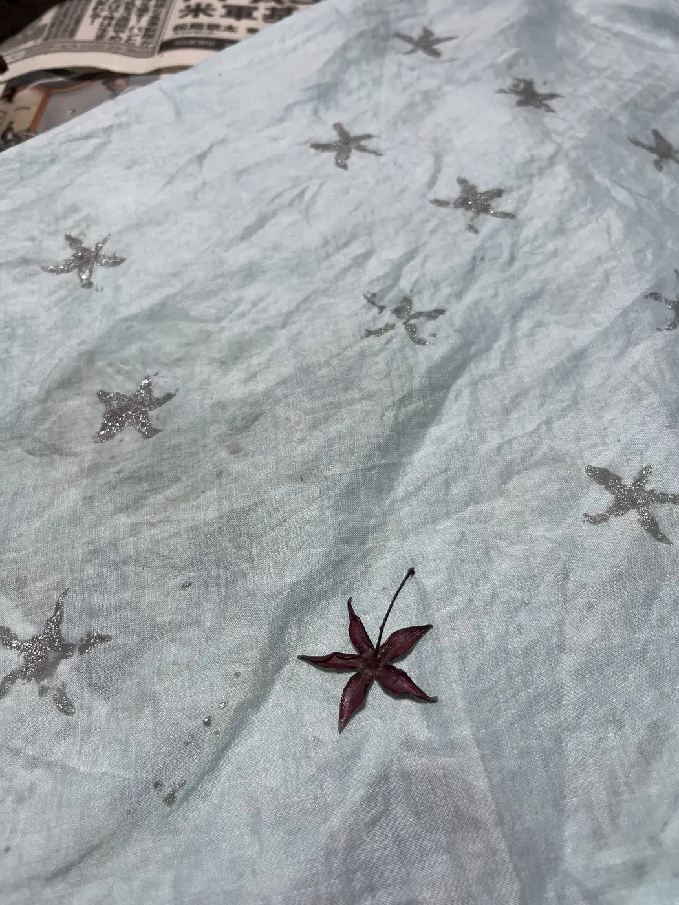
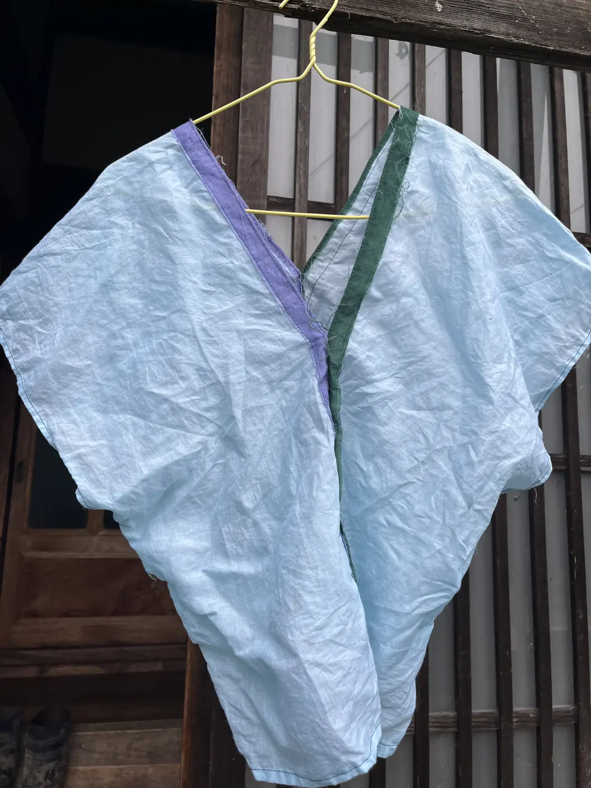
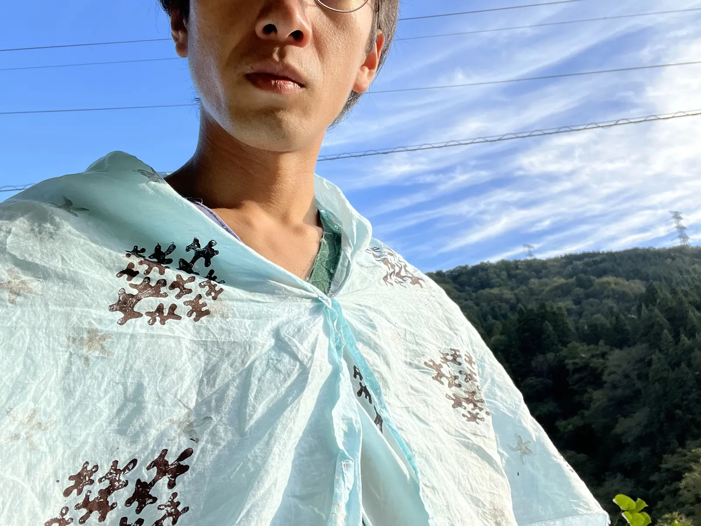
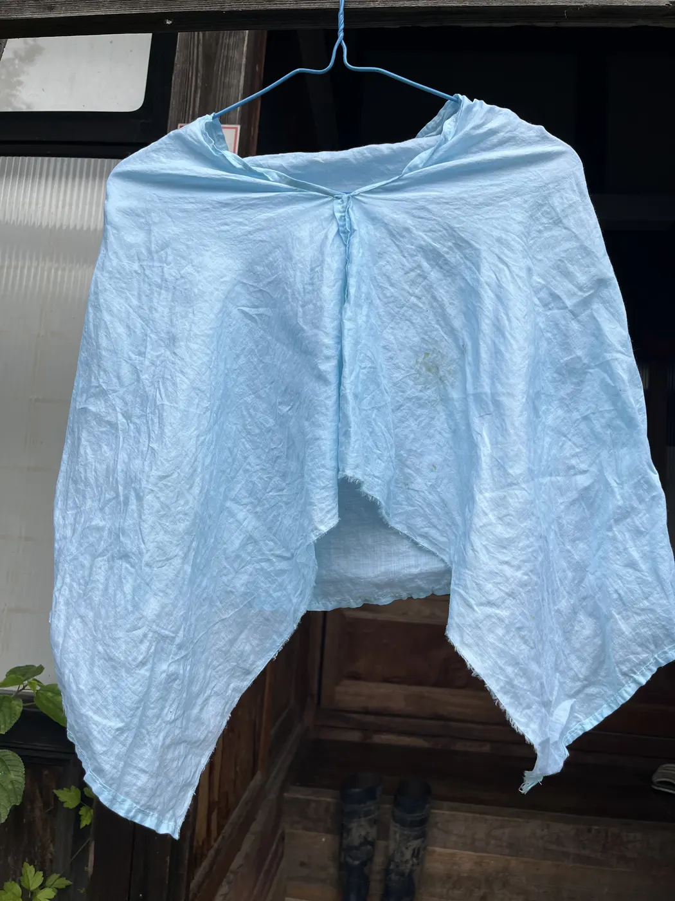
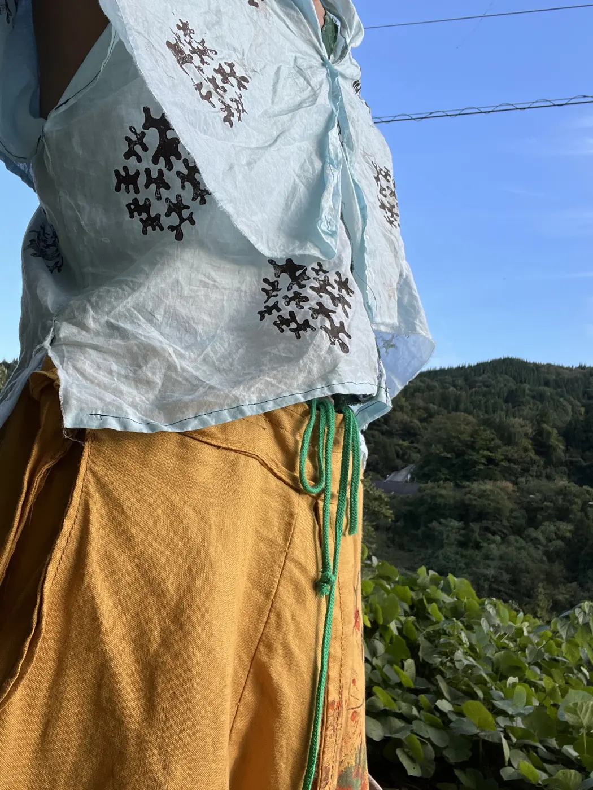

貫頭衣／クロップドマント
ラミー生地を直線的に仕立て、クサギ染、朽木型スタンプ、萼の草花拓を重ねた貫頭衣と短いマントです。
- Year
- 2025年
- Place
- 小院瀬見
- Materials / Method
- ラミー、クサギ染、草花拓
What I tried
クサギ染の青い生地へ、朽木から起こした3Dプリント型を手で押しました。マントにはクサギの萼を銀色で写しています。造形と装飾を別工程にせず、布を採寸し、染め、型を作り、着用して調整するまでを一つの制作として扱いました。






